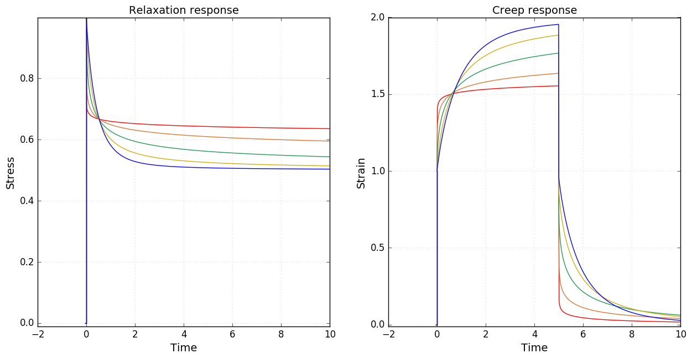
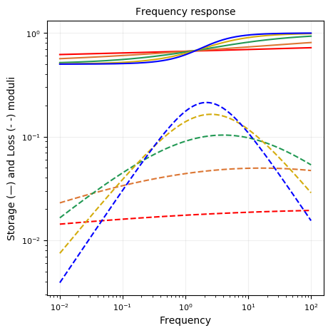
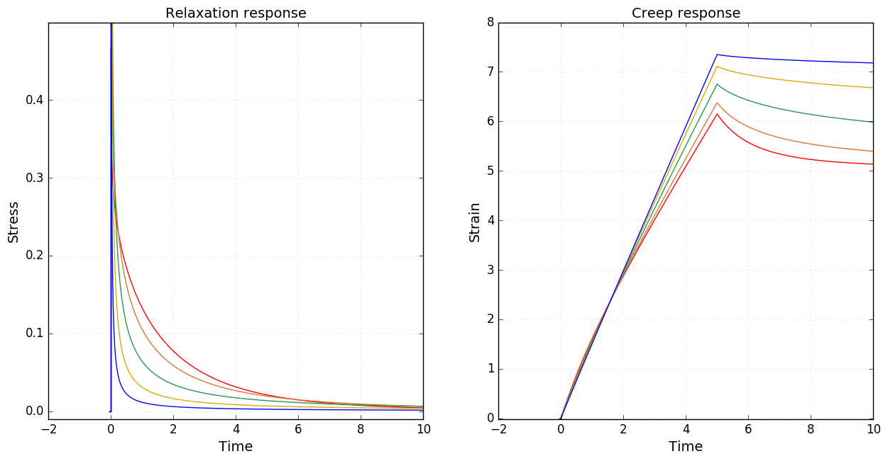
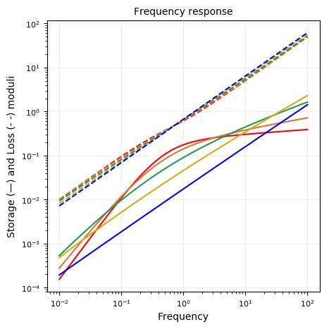
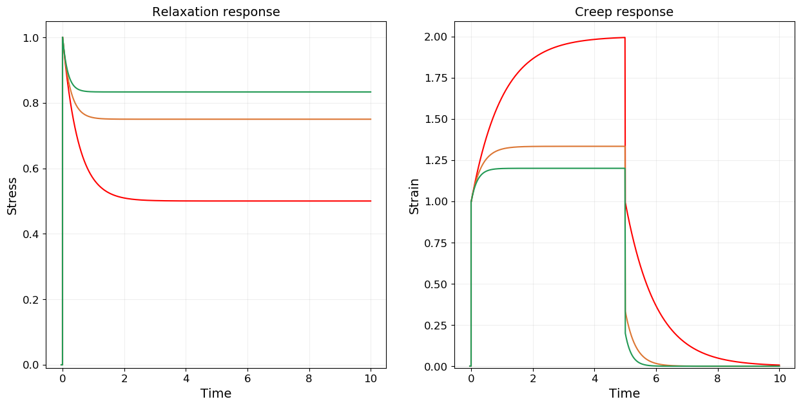
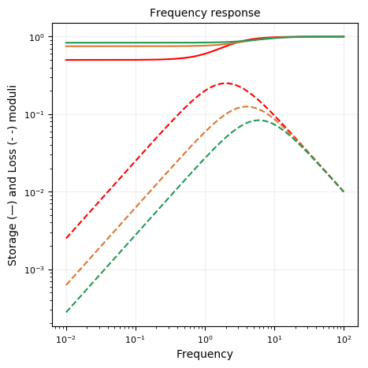
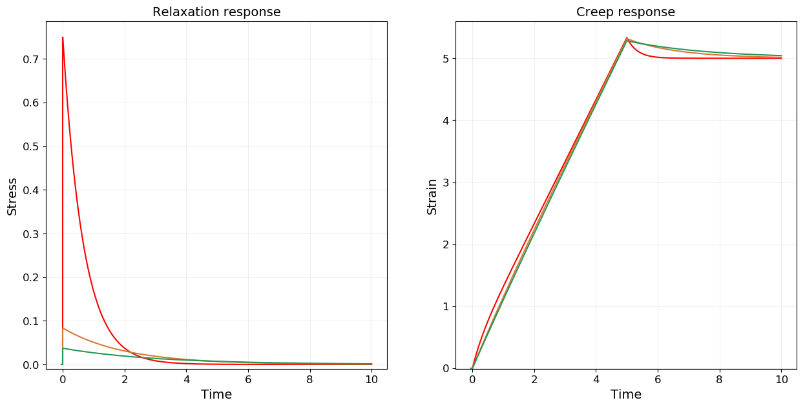
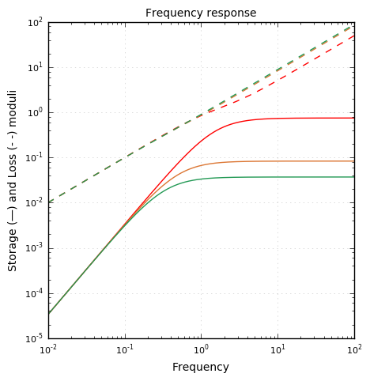

Fractional Poynting-Thomson
using RHEOS
include("plotmodel.jl");Fract_PTModel name: fPT
Free parameters: cₐ, a, cᵦ, β, cᵧ and γ
_________╱╲_________
| ╲╱ cₐ, a |
____| |______╱╲____
| | ╲╱
|_________╱╲_________| cᵧ, γ
╲╱
cᵦ, βConstitutive equation
\[\sigma(t) + \frac{c_\alpha}{c_\gamma} \frac{d^{\alpha-\gamma} \sigma(t)}{dt^{\alpha-\gamma}}+ \frac{c_\beta}{c_\gamma} \frac{d^{\beta-\gamma} \sigma(t)}{dt^{\beta-\gamma}}= c_{\alpha} \frac{d^\alpha \epsilon(t)}{dt^\alpha} + c_\beta \frac{d^\beta \epsilon(t)}{dt^\beta}\]
Assuming $0 \leq \beta \leq \alpha \leq 1$
Relaxation modulus
\[\tilde{G}(s) = \frac{1}{s}\frac{c_\gamma s^\gamma \cdot \left[c_\alpha s^\alpha + c_\beta s^{\beta}\right]}{c_\gamma s^\gamma+c_\alpha s^{\alpha}+c_\beta s^{\beta}}\]
Creep modulus
\[J(t)= \frac{t^{\alpha}}{c_\alpha} E_{\alpha-\beta,1+\alpha}\left(-\frac{c_\beta}{c_\alpha} t^{\alpha-\beta}\right) + \frac{1}{c_\gamma \Gamma(1+\gamma)}t^\gamma\]
Storage modulus
\[G^{\prime}(\omega) = \frac{c_\gamma \omega^\gamma \cos\left(\gamma \frac{\pi}{2}\right) \left[\left(c_\alpha \omega^\alpha\right)^2+\left(c_\beta \omega^\beta\right)^2 \right]+\left(c_\gamma \omega^\gamma\right)^2 \left[c_\alpha \omega^\alpha \cos\left(\alpha \frac{\pi}{2}\right)+c_\beta \omega^\beta \cos\left(\beta \frac{\pi}{2}\right) \right] + c_\alpha \omega^\alpha \cdot c_\beta\omega^\beta \cdot c_\gamma \omega^\gamma \left[\cos\left((\alpha-\beta-\gamma) \frac{\pi}{2}\right)+\cos\left((\beta-\alpha-\gamma) \frac{\pi}{2}\right) \right]}{\left(c_\alpha \omega^\alpha\right)^2+\left(c_\beta \omega^\beta\right)^2+\left(c_\gamma \omega^\gamma\right)^2+2c_\alpha \omega^\alpha \cdot c_\beta \omega^\beta \cos((\alpha-\beta)\frac{\pi}{2})+2c_\alpha \omega^\alpha \cdot c_\gamma \omega^\gamma \cos((\alpha-\gamma)\frac{\pi}{2})+2c_\beta \omega^\beta \cdot c_\gamma \omega^\gamma \cos((\beta-\gamma)\frac{\pi}{2})}\]
Loss modulus
\[G^{\prime\prime}(\omega) = \frac{c_\gamma \omega^\gamma \sin\left(\gamma \frac{\pi}{2}\right) \left[\left(c_\alpha \omega^\alpha\right)^2+\left(c_\beta \omega^\beta\right)^2 \right]+\left(c_\gamma \omega^\gamma\right)^2 \left[c_\alpha \omega^\alpha \sin\left(\alpha \frac{\pi}{2}\right)+c_\beta \omega^\beta \sin\left(\beta \frac{\pi}{2}\right) \right] + c_\alpha \omega^\alpha \cdot c_\beta\omega^\beta \cdot c_\gamma \omega^\gamma \left[\sin\left((\alpha-\beta-\gamma) \frac{\pi}{2}\right)+\sin\left((\beta-\alpha-\gamma) \frac{\pi}{2}\right) \right]}{\left(c_\alpha \omega^\alpha\right)^2+\left(c_\beta \omega^\beta\right)^2+\left(c_\gamma \omega^\gamma\right)^2+2c_\alpha \omega^\alpha \cdot c_\beta \omega^\beta \cos((\alpha-\beta)\frac{\pi}{2})+2c_\alpha \omega^\alpha \cdot c_\gamma \omega^\gamma \cos((\alpha-\gamma)\frac{\pi}{2})+2c_\beta \omega^\beta \cdot c_\gamma \omega^\gamma \cos((\beta-\gamma)\frac{\pi}{2})}\]
Fractional SLS (PT)
FractSLS_PTModel name: fSLS_PT
Free parameters: cₐ, a, kᵦ and kᵧ
_________╱╲_________
| ╲╱ cₐ, a |
____| |______╱╲ ╱╲ ╱╲ ____
| | ╲╱ ╲╱ ╲╱
|____╱╲ ╱╲ ╱╲ ____| kᵧ
╲╱ ╲╱ ╲╱
kᵦmodels = Vector{RheoModel}()
# plot moduli for varying α
for (i,α) in enumerate([0.1, 0.25, 0.5, 0.74, 0.9])
models = vcat(models,RheoModel(FractSLS_PT,(cₐ = 1, a = α, kᵦ = 1, kᵧ = 1)))
end
plotmodel(models);

Fractional Jeffreys (PT)
FractJeffreys_PTModel name: fjeff_PT
Free parameters: ηₐ, cᵦ, β and ηᵧ
___
_________| |________
| _|_| ηₐ | ___
____| |_________| |_____
| | _|_| ηᵧ
|_________╱╲_________|
╲╱
cᵦ, βmodels = Vector{RheoModel}()
# plot moduli for varying β
for (i,β) in enumerate([0.1, 0.25, 0.5, 0.74, 0.9])
models = vcat(models,RheoModel(FractJeffreys_PT,(ηₐ = 1, cᵦ = 1, β = β, ηᵧ = 1)))
end
plotmodel(models, ymaxG = 0.5);

Standard Linear Solid (PT)
SLS_PTModel name: SLS_PT
Free parameters: η, kᵦ and kᵧ
___
_________| |________
| _|_| η |
____| |______╱╲ ╱╲ ╱╲ ____
| | ╲╱ ╲╱ ╲╱
|____╱╲ ╱╲ ╱╲ ____| kᵧ
╲╱ ╲╱ ╲╱
kᵦmodels = Vector{RheoModel}()
# plot moduli for varying kᵦ
for (i,k) in enumerate([1.0, 3.0, 5.0])
models = vcat(models,RheoModel(SLS_PT,(η = 1, kᵦ = k, kᵧ = 1)))
end
plotmodel(models);

Jeffreys (PT)
Jeffreys_PTModel name: jeffreys_PT
Free parameters: ηₐ, k and ηᵧ
___
_________| |________
| _|_| ηₐ | ___
____| |_________| |_____
| | _|_| ηᵧ
|____╱╲ ╱╲ ╱╲ ____|
╲╱ ╲╱ ╲╱
kmodels = Vector{RheoModel}()
# plot moduli for varying ηₐ
for (i,η) in enumerate([1.0, 5.0, 8.0])
models = vcat(models,RheoModel(Jeffreys_PT,(ηₐ = η, k = 3, ηᵧ = 1)))
end
plotmodel(models);
